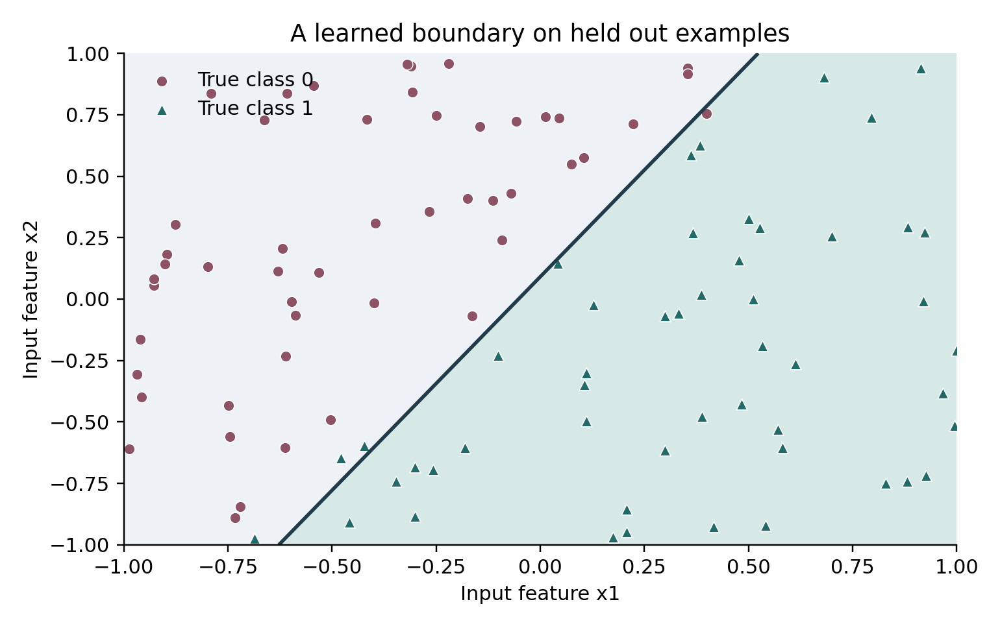

1 Train your first model before learning the whole field
What small supervised models do
A supervised model learns a mapping from examples of inputs and desired outputs. Use it when the relationship is learnable from available evidence but too variable to specify reliably as a short deterministic program. A compact tabular predictor can score records; an image classifier can route photographs for review; a detector can supply object locations to a tracking system; a segmenter can provide masks for measurement or compositing. The application still owns validation, thresholds, coordinate transforms, human review, and failure handling.
A typical application is input validation → the same preprocessing used in training → model → output decoding → business action. Keep that chain explicit. Choosing a larger model does not repair an ambiguous target or unavailable information. We will discover the required concepts through progressively richer inputs and outputs, beginning with a few numbers.
The smallest complete experiment
Your first project will take two numbers and predict either zero or one. It uses three learned values, runs on a CPU, needs only Python, and writes a model you can load again. This may seem far from a language model, but it contains the same essential pattern: examples, inputs, targets, a parameterized computation, a loss, an update, evaluation, and an artifact.
Do not turn on the GPU for this exercise. A larger machine would hide the simplicity without adding anything useful. The goal is to see exactly where learning happens. Later projects preserve this structure while replacing the representation and computation.
The task is deliberately synthetic. Each input has two features, x1 and x2, ranging from -1 to 1. A hidden labeling rule assigns one class on one side of a line and the other class on the other side. Because we generated the labels ourselves, this project has no data licensing or annotation ambiguity. It is a learning exercise, not evidence that a model is ready for a real-world application.
Run it
Install a supported Python 3 interpreter if you do not already have one. Open a terminal in the unpacked companion directory. The command below prints your Python version. Some computers use python3 instead of python; use the name that refers to your intended interpreter consistently.
python --version
python examples/first-model/train.py --output runs/first
python examples/first-model/predict.py runs/first/model.json 0.8 -0.4No package installation or model download is required. The training command refuses to write into a nonempty output directory, so a new experiment cannot silently overwrite the old one. If runs/first already contains results, choose runs/first_02 or another new name.
The output includes a validation loss before training, a validation loss after training, an accuracy, and the location of model.json. In the CPU check performed for this edition, the fixed synthetic example reduced validation loss from approximately 0.693 to 0.134 and reached 0.96 validation accuracy. A separate fixed test set reached 0.985 accuracy. These are measured educational-example results, not performance claims about real data.
This standard-library implementation has no GPU backend. Its CPU path is the intended deployment and is fast enough for this three-parameter model. A GPU version would require replacing the list arithmetic with an appropriate tensor library, which the later neural projects introduce.
The prediction command should return a probability close to one for the input 0.8, -0.4 and class 1. Open model.json with a text editor. You will see two weights, a bias, a threshold, and metadata about the run. That small file is the trained artifact. It does not contain the entire training dataset.

Figure 1 The first model learns a straight line boundary. Colors and marker shapes indicate true labels on the held out validation points. The figure is drawn from the actual dependency free run.
What went in and what came out
An example is one pair of input values and one correct label. The training set contains 200 examples. The validation set contains 100 separately generated examples. A test set contains 200 more. Different fixed random seeds create reproducible but separate samples from the same synthetic rule.
The model calculates a score:
score = weight1 * x1 + weight2 * x2 + biasIt then applies a sigmoid function to map that score to a number between zero and one. A score of zero gives 0.5. A large positive score gives a value near one. A large negative score gives a value near zero. The classifier returns class 1 when the value is at least 0.5.
The three adjustable values are parameters. At the beginning they are all zero, so every input gets probability 0.5. The initial model has no useful boundary. Training adjusts the values so inputs labeled 1 tend to get higher scores and inputs labeled 0 tend to get lower scores.
In this project the model can represent a straight-line boundary. It cannot represent every possible pattern in two dimensions. For example, if the correct class were 1 inside a ring and 0 elsewhere, a single linear score would be insufficient. Changing the training duration would not fix that architecture mismatch. You would need a different representation or a more expressive model.
The loss says how wrong the probabilities are
Accuracy is the fraction of correct class predictions. It is easy to understand, but it changes abruptly when a prediction crosses the 0.5 threshold. Moving a correct prediction from probability 0.51 to 0.95 leaves accuracy unchanged even though the model has become more confident in the right direction.
The training loss is binary cross-entropy. It penalizes giving low probability to the correct label. At the initial probability of 0.5, the loss is about 0.693 per example. The script uses a numerically stable formula so that large scores do not cause unnecessary overflow.
You do not need to memorize the loss formula before running the project. Understand its contract: lower loss means the model assigns more probability to the labels in this particular dataset. It does not mean the labels are correct in the outside world. If you deliberately reverse the labels, the model will learn the reversed task.
The update is a small correction
For each example, the script calculates error = predicted probability minus label. If the target is 1 and probability is too small, this error is negative. If the target is 0 and probability is too large, it is positive. Multiplying this error by an input feature tells the script how to adjust the corresponding weight locally.
The script averages these contributions across all training examples, then subtracts learning rate times the result from each parameter. It repeats this update 400 times. The learning rate is 0.5 in the default configuration. These numbers are suitable for this tiny normalized synthetic problem; do not transplant them into an LLM recipe.
This is full-batch gradient descent because every update uses the entire training set. Later projects use smaller batches because the complete dataset cannot fit in one computation. The general pattern is unchanged: compute predictions, measure a loss, calculate a direction of improvement, update parameters.
Read the small part that performs learning
The complete script is in examples/first-model/train.py. The essential update can be understood from this simplified excerpt:
error = predicted_probability - correct_label
weight_gradient += error * input_feature
weight -= learning_rate * weight_gradient / number_of_examplesThe script has two features and therefore two weight gradients. It also updates the bias. The averaging step matters: without it, changing dataset size would change the scale of the update. Real training code has more complex tensor operations, but a major part of debugging still consists of asking whether these quantities mean what you think they mean.
The script saves the model, reloads it, and checks that the reloaded values produce the same validation metrics. This is a small example of an export-equivalence test. A model that works only inside the original training process is not yet a usable deliverable.
Every control in the first command
--steps is the number of parameter updates. Larger values allow more optimization, but do not create more independent examples. --learning-rate controls update size. --output selects a new directory for model.json and metrics.json. The data sizes and random seeds are fixed inside the educational script so the initial comparison is repeatable.
The probability threshold of 0.5 is an inference decision rule. It is not a training parameter in this example. For real tasks, the threshold may depend on the relative consequences of false positives and false negatives. Select it using validation data and the intended operating requirement, then evaluate the resulting fixed rule on a separate test set.
The seed determines pseudo-random number generation. A seed makes this controlled example reproducible; it does not establish that the examples represent the real world. The train, validation, and test seeds are separate to avoid reusing exactly the same samples.
Change one thing and predict what should happen
Run 50 steps in a new directory. The loss should improve less than after 400 steps. Try a smaller learning rate. It should usually learn more slowly at a fixed step count. Try swapping the feature values supplied to the prediction command. The output can change because feature order is part of the model contract.
Then change the synthetic labeling rule to an XOR-style rule: class 1 when x1 and x2 have different signs, otherwise class 0. Keep the linear model. You should no longer expect a straight-line boundary to solve the task. This is a controlled way to learn the difference between insufficient optimization and an unsuitable hypothesis class.
Do not repeatedly inspect the test set while choosing changes. For these educational variations, use validation results and reserve a newly generated final test set for the final chosen procedure. A test set becomes another development set when it guides repeated decisions.
The first project checklist
You have completed the project when you can explain the input shape, the label meaning, the three learned parameters, the loss, the learning rate, the difference between training and evaluation data, and the saved artifact. You should be able to load the model in a new process and predict one new input.
If you cannot explain one of those pieces yet, revisit it before adding architecture. The next projects are larger versions of this loop, not an unrelated kind of magic.